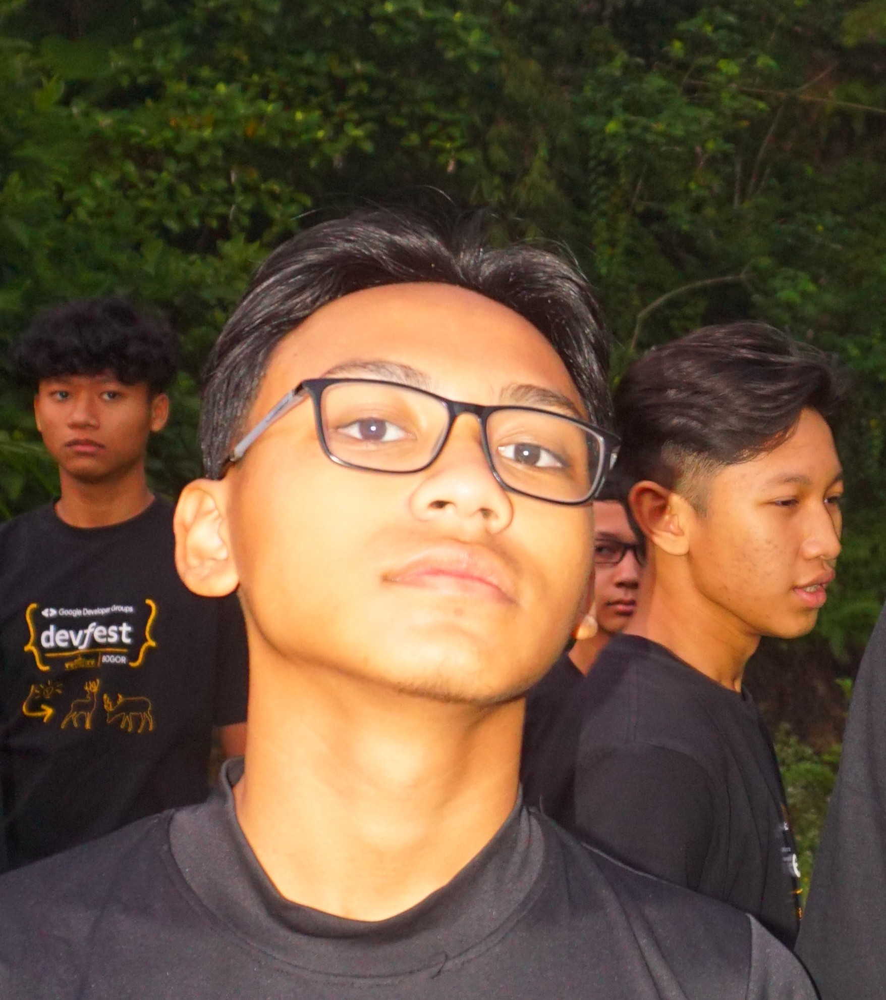

Stands for Smart Diligent Religious Generation, a generation full of smart and diligent Muslims who are born to be a leader and able to change the world

Si Inggris
Eh tapi ini SMADIRETION apaan dah? masih gak ngerti gw!
Si Kelek
Halah Masa SMADIRETION aja kagak tau! lu anak SMADI apa kagak?!
Our Journey
The Beginning
Terbentuklah angkatan SMADIRETION acronym dari Smart Diligent Religious Generation yang bermakna Generasi yang berisi Muslim yang pintar dan rajin. SMADIRETION berasal dari Sekolah Al Bunyan dengan 60+ santri dari berbagai daerah.
Bonding
Sudah setahun SMADIRETION dibentuk dan belajar di Sekolah Al Bunyan Boarding School dan semakin tahun menambah semakin banyak pula siswa yang hadir di SMADIRETION. SMADIRETION semakin
iPod
The iPod is a discontinued series of portable media players and multi-purpose mobile devices
designed and marketed by Apple Inc. The first version was released on October 23, 2001, about
8+1⁄2 months after the Macintosh version of iTunes was released. Apple sold an estimated 450
million iPod products as of 2022. Apple discontinued the iPod product line on May 10, 2022. At
over 20 years, the iPod brand is the oldest to be discontinued by Apple
iPhone
iPhone is a line of smartphones produced by Apple Inc. that use Apple's own iOS mobile
operating system. The first-generation iPhone was announced by then-Apple CEO Steve Jobs on
January 9, 2007. Since then, Apple has annually released new iPhone models and iOS updates. As
of November 1, 2018, more than 2.2 billion iPhones had been sold. As of 2022, the iPhone
accounts for 15.6% of global smartphone market share
Apple Watch
The Apple Watch is a line of smartwatches produced by Apple Inc. It incorporates fitness
tracking, health-oriented capabilities, and wireless telecommunication, and integrates with
iOS and other Apple products and services